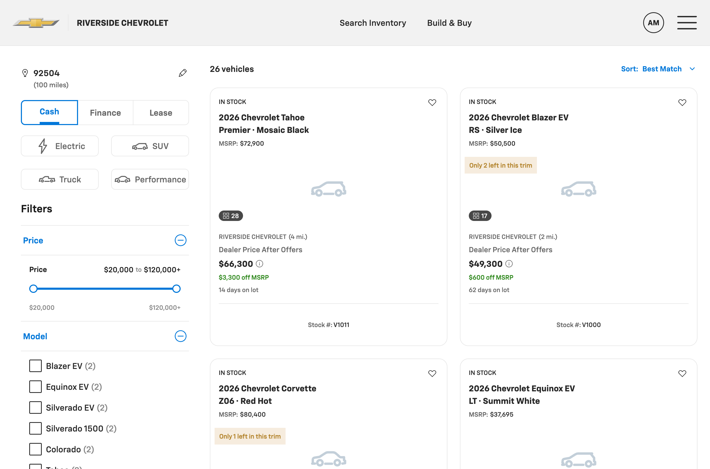
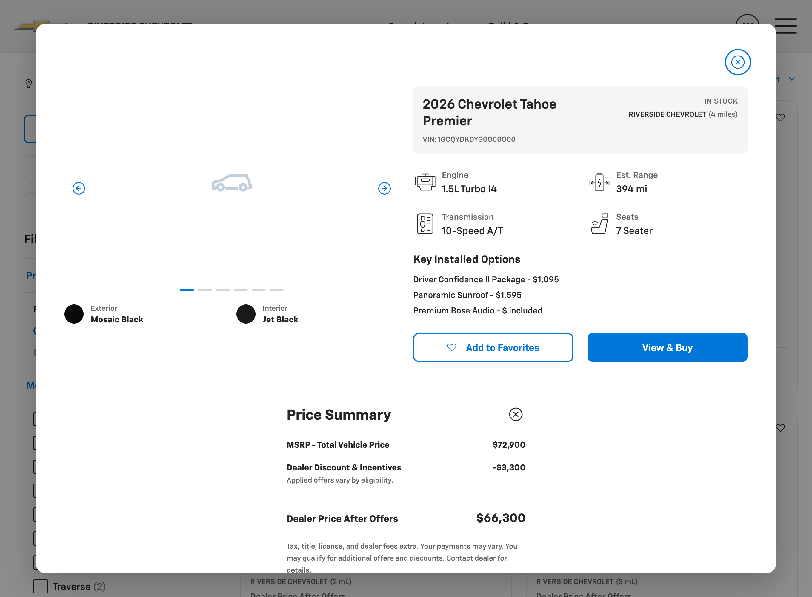
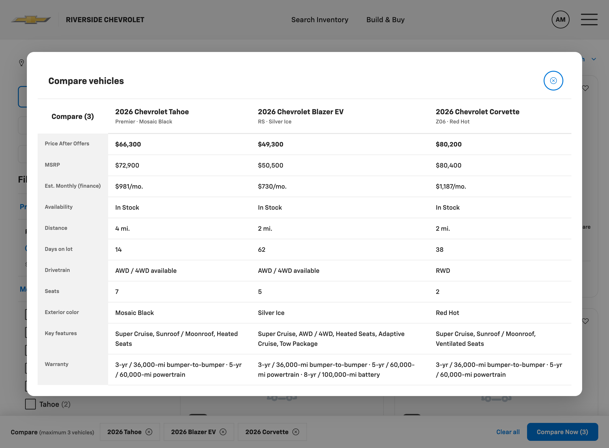
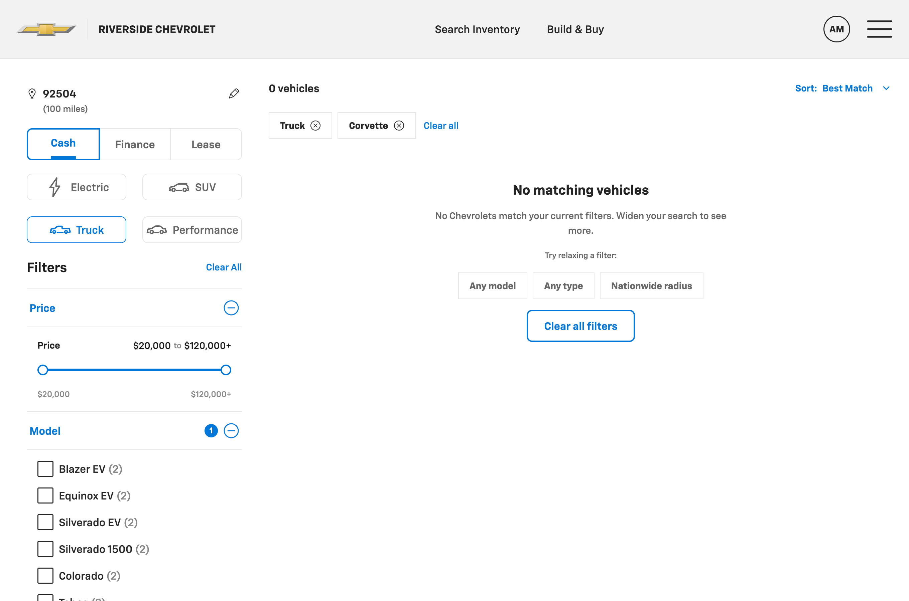
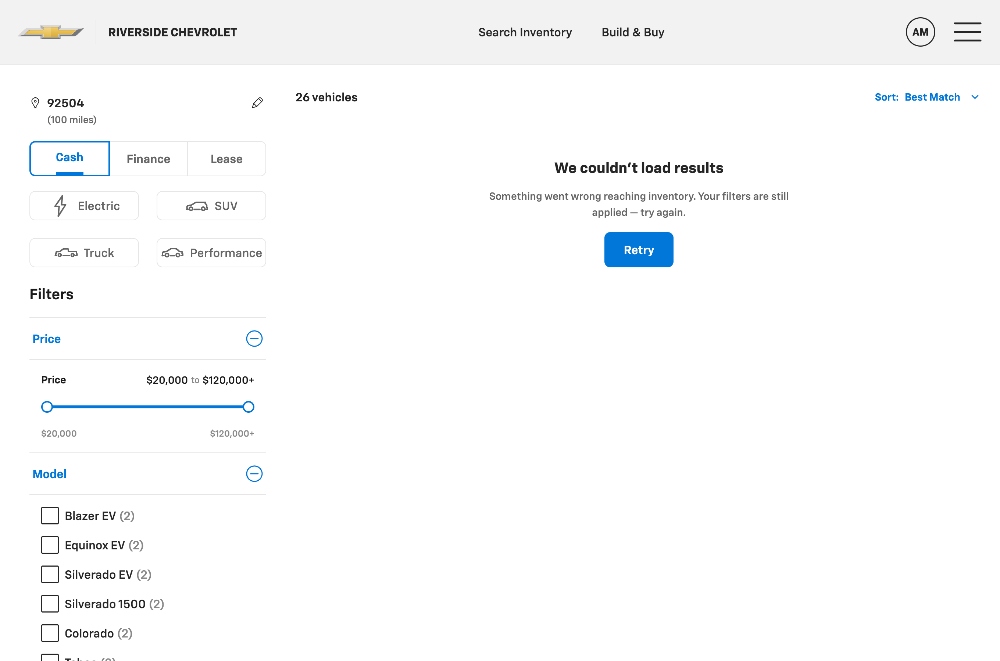
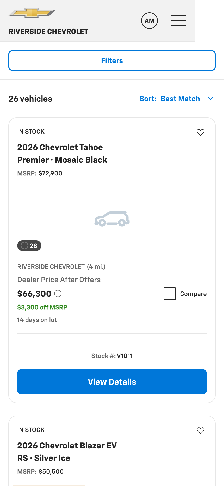

1. Summary
From a pasted PRD, we produced a working Chevrolet VSR prototype in one session. It runs in a browser, consumes Alloy as a read-only source of truth (its real CSS classes and tokens), and covers the PRD jobs: filter, gauge affordability, save, compare, and link out to the VDP.
What it is
A functional, on-brand, responsive front-end prototype in vanilla HTML/CSS/JS that reuses Alloy's stylesheet, plus a full artifact chain (constitution → spec → plan → tasks → drift log).
What it is not
Production code, a real integration (data is mocked), or a multi-brand build (Chevrolet only). It required an engaged human reviewer throughout — it was not autonomous.
Cost was $102.35 over ~1h 45m of active session time.
2. Visual evidence


vsr-quick-view) + itemized Price Summary (vsr-math-box).



3. What was built
| Area | Delivered |
|---|---|
| Shell | Alloy tier-3 header + footer; responsive rail-vs-results layout (desktop / tablet / mobile) |
| Filter panel | Instant-apply desktop with live count; mobile bottom-sheet with Apply (N) / Clear all; collapsible Price · Model · Color · Features; editable ZIP + search radius (radius filters by distance) |
| Active filters | Removable chips + Clear all |
| Result cards | PRD data fields; cash / finance / lease payment; APR tooltip; favorite heart; photo-count badge; days-on-lot; low-inventory overlay |
| Sort & paging | "Best Match" (+ 4 sorts) via Alloy menu; desktop 24/page numbered pager; mobile infinite scroll (12 at a time) |
| Quick View | Desktop modal + itemized Price Summary |
| Compare | Sticky tray (max 3, session-persistent) + side-by-side spec table (11 rows) |
| States | Skeleton loading, zero-result + suggestions, partial-match banner, error + retry, low-inventory |
| Persistence | Filters, favorites, compare tray persist within the session — no login |
| Quality bar | Responsive at 600 / 1024; motion + prefers-reduced-motion; keyboard focus rings; ≥40px tap targets; AA contrast; CTA link-outs |
Each step was verified in a live browser (filter math, staged mobile apply, pagination, compare limits, and each state were exercised), not only visually reviewed.
4. How it was done — the workflow
- Scaffold — a constitution pins the project to Alloy and inherits its visual direction.
- Spec — the pasted PRD becomes a full spec (problem, scope, flows, component map, four-state matrix, acceptance criteria). It scored completeness and asked targeted questions where the PRD was ambiguous (brand scope, gap handling, flow boundary, out-of-scope).
- Plan + tasks — 10 checkpointed build steps, each re-reading the spec and stopping for review.
- Build — step by step, verified in-browser, checkpointed with the designer between steps.
5. Design-system fidelity & governance
- Alloy-grounded, Chevrolet only. No hardcoded brand hex, no invented token namespaces.
- Read-only enforced. Nothing under
design-systems/alloy/was modified; nothing outsideprojects/gm-vsr/was touched. - 8 gaps flagged, not faked — needs Alloy doesn't cover yet, built net-new from Alloy atoms and logged in the constitution. Whether they're valuable depends on the design-system team acting on them; on their own they're a byproduct of building against the real system, not a deliverable.
compare traycompare modalnumbered paginationskeleton loaderphoto-count badgedays-on-lotform-selectsurface/text tokens - Full drift log — every deviation and judgment call recorded in
tasks.md.
6. What went well
- Clarifying questions up front prevented building the wrong thing (brand scope and out-of-scope settled before code).
- The output reads as genuine Alloy UI because it reuses Alloy's actual classes, not approximations.
- In-browser verification caught real bugs during the build rather than after.
- The artifact chain makes every decision auditable by someone who wasn't in the session.
What was hard
- My cost estimate was wrong — I said $30–60; actual was $102.35 (~2× low). Underweighted cache-read volume.
- Bugs needed iteration — Alloy CSS overriding the HTML
hiddenattribute; a JS/CSS breakpoint desync. Normal, but not first-try-correct. - The spec didn't map cleanly everywhere — "partial-match by trim" had no trim filter; the card "status pill" is plain text in Alloy. Judgment calls, recorded as drift.
- Alloy has its own gaps — no global surface/text tokens, so the shell reused Alloy's fallback literals. Acceptable, not clean.
- Verification tooling added overhead — the preview pane didn't fire resize events on programmatic resize and dropped screenshot bands; needed workarounds.
- It needed a human at every checkpoint — several designer redirects shaped the result. Good for control; it means the workflow is assisted, not autonomous.
7. Cost breakdown (actual, from /cost)
7.1 Measured totals
| Total cost | $102.35 |
| Active time | 1h 45m (API compute 1h 39m) |
| Code produced | +3,467 / −482 lines |
| Model | Opus 4.8 · 100% (no Haiku) |
| Cache hit rate | 95% |
| Tokens (reported) | cache read 203.0M · cache write 10.7M · output 8.7k · input 1.2k |
7.2 Token composition (~213.7M total)
| Category | Tokens | Share | What it is |
|---|---|---|---|
| Cache read | 203.0M | ~95% | Re-reading the working context each turn — Alloy source, artifact chain, prior conversation, ~20 verification screenshots |
| Cache write | 10.7M | ~5% | First-time ingest of that context into the cache |
| Output | 8.7k | <0.01% | Newly generated tokens (as reported) |
| Input | 1.2k | <0.01% | Uncached prompt tokens |
Cost is dominated by context re-reads, not generation. The 95% cache-hit rate held it at ~$100; without caching it would have been several times higher. The most expensive single content type was verification screenshots.
/cost does not itemize dollars per token category, and the reported output count (8.7k) is lower than +3,467 lines of code would imply — so the per-category numbers are volumes as displayed, not a reconciled dollar split. The authoritative figure is the $102.35 total.7.3 Unit economics (derived from the $102.35 total)
| Unit | Cost |
|---|---|
| Per million tokens processed (blended) | ~$0.48 |
| Per active hour | ~$58 |
| Per build step (10 steps) | ~$10 |
| Per line of code produced | ~$0.03 |
7.4 Reading the cost honestly
- $102 for one prototype screen is real money. It's favorable if the alternative is days of designer + engineer time — but that comparison is an unmeasured estimate, not a benchmark, and this was a single screen with an engaged reviewer, not a hands-off batch.
- The cost is front-loaded in context (re-reading the design system + growing session). That implies per-screen cost should fall when the extraction is reused across projects — a projection, not something this POC proved.
- Levers, in priority order: reuse the design-system extraction across projects; prefer DOM assertions over screenshots for verification; run longer autonomous stretches between checkpoints.
8. Assessment & recommendation
For turning a written spec into a working, on-brand, verified prototype on an existing design system, this was effective — one screen in one session for ~$100, with an auditable trail and no off-brand invention. The caveats are equally real: it's a prototype not production, it needed continuous human review, several things took more than one try, and the per-screen economics at scale are a projection.
Suggested next steps (each with a cost/effort implication):
- Try it on 2–3 more screens to test whether per-screen cost actually drops with design-system reuse — the key open question.
- Route the 8 flagged Alloy gaps to the design-system owner as a backlog.
- If pursued further: Buick/GMC/Cadillac theming, live API wiring, and hardening the net-new pieces into real Alloy components — all additional work beyond this POC.